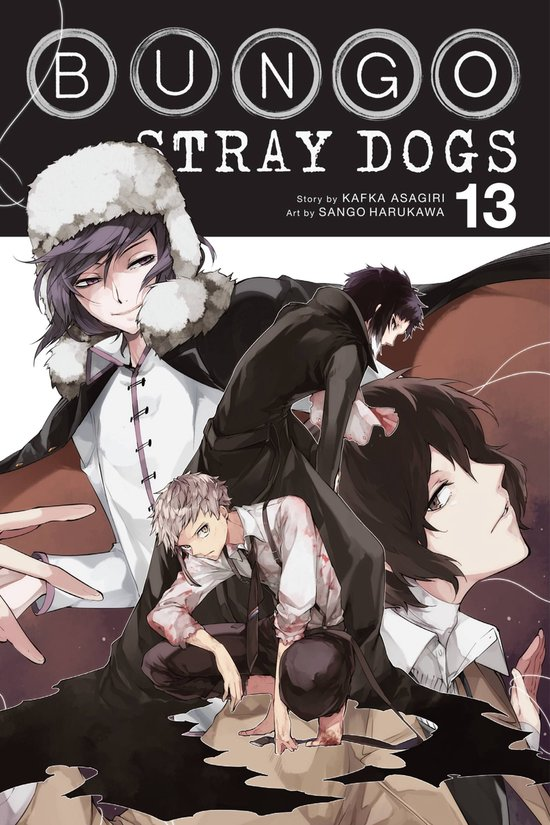

Детективные книги/сериалы/фильмы/аниме
Аниме
|
Бродячие псы: литературные гении
 |
Жанры: приключения, комедия, драма, мистика, детектив и триллер Аниме «Bungou Stray Dogs» стало одним из самых заметных проектов 2016 года, заинтересовав зрителей увлекательной завязкой и обилием харизматичных персонажей |
|
Патриотизм Мориарти .jpg) | Жанры: детектив, триллер и психология. Невероятные умозаключения, поиск улик, а также распутывание сложных дел можно увидеть в аниме "Yuukoku no Moriarty". Мориарти никогда не привык останавливаться на полпути и этот раз не стал исключением. Для великого сыщика не станут преградой даже влиятельные политики, которые не догадываются, с кем они связались на самом деле. |